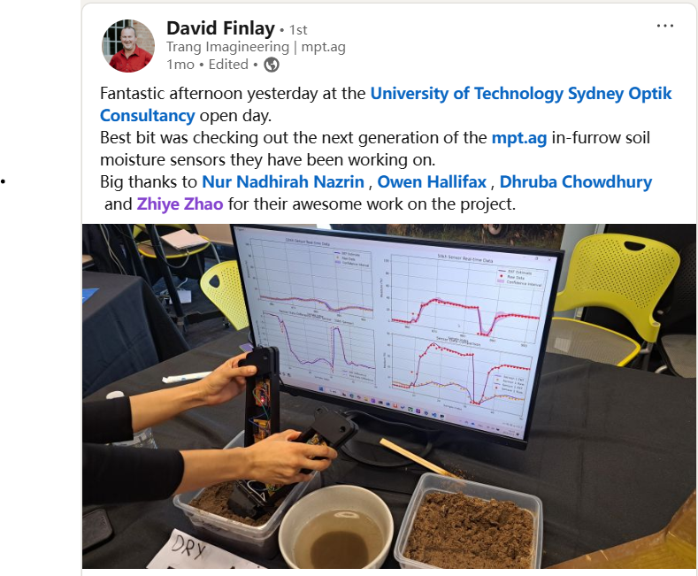

Soil Moisture Estimation System
Project Goal
This project develops a robust soil moisture sensing system for MPT AgTech's autonomous seeding platform. At its core is a real-time estimation algorithm based on the Extended Kalman Filter (EKF), which I independently designed and implemented during my internship at Optik Consultancy. The system ensures accurate, stable readings under noisy and uncertain agricultural conditions.
Demonstration
The video below showcases the real-time performance of the EKF-based soil moisture estimation system. The project was publicly demonstrated at the University of Technology Sydney and received direct recognition from MPT AgTech representatives, who praised its accuracy, robustness, and seamless integration.
The image below is a LinkedIn post shared by an engineer at MPT AgTech, highlighting the performance and team effort behind this project. It reflects the recognition our solution received after the demonstration, and lists all core contributors, including myself.
Core Techniques
- ✓ Designed and implemented a real-time EKF-based soil moisture estimation pipeline
- ✓ Filtered sensor signals under real-world noise and environmental fluctuations
- ✓ Calibrated and tuned the filter for hardware non-idealities and field deployment
- ✓ Validated and praised by MPT AgTech engineers in live demonstration